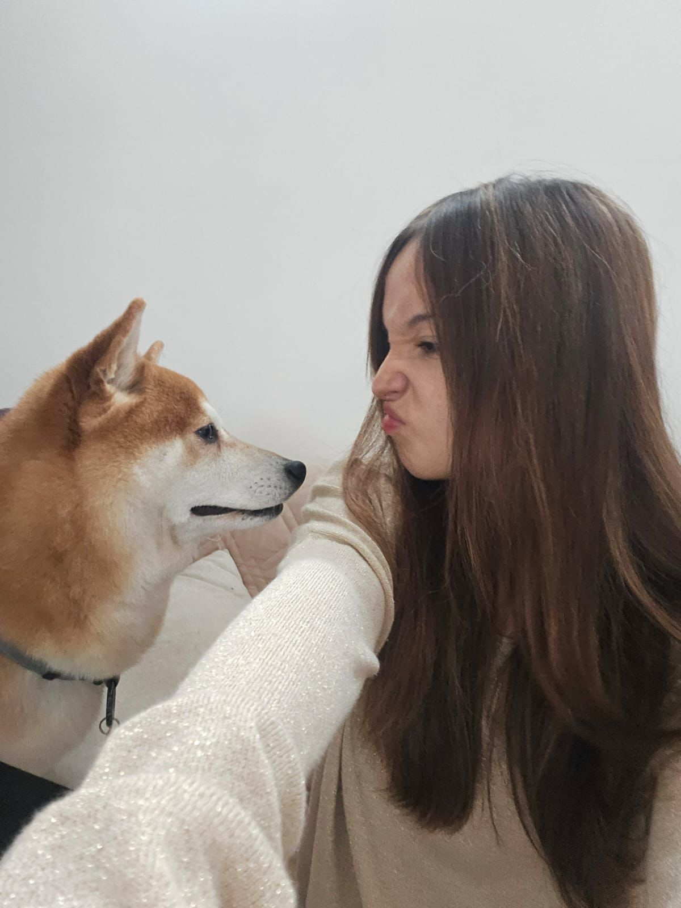
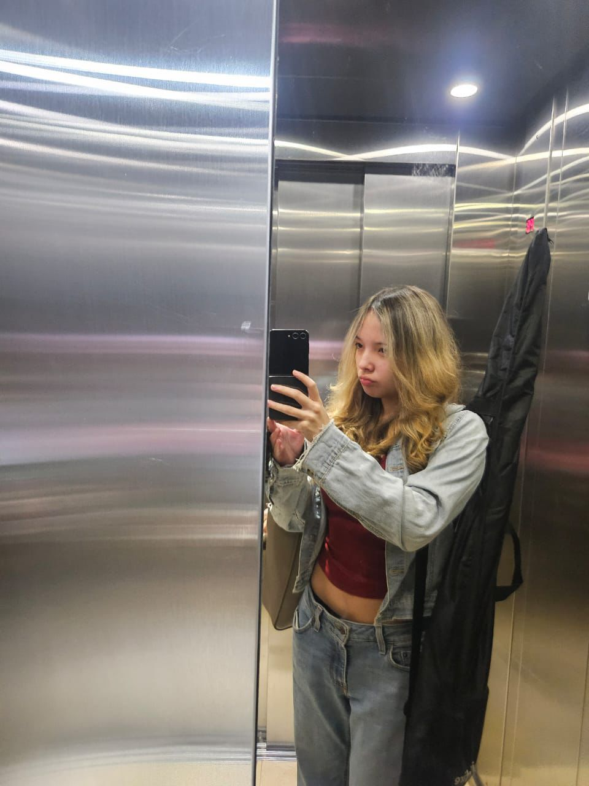
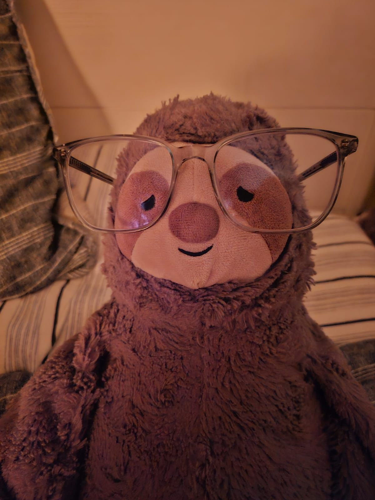
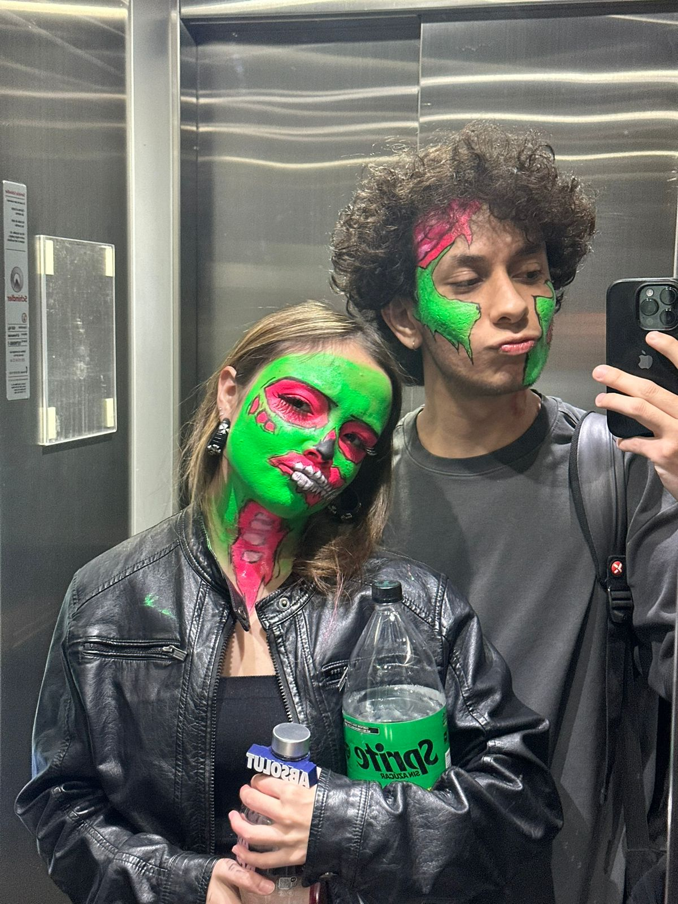
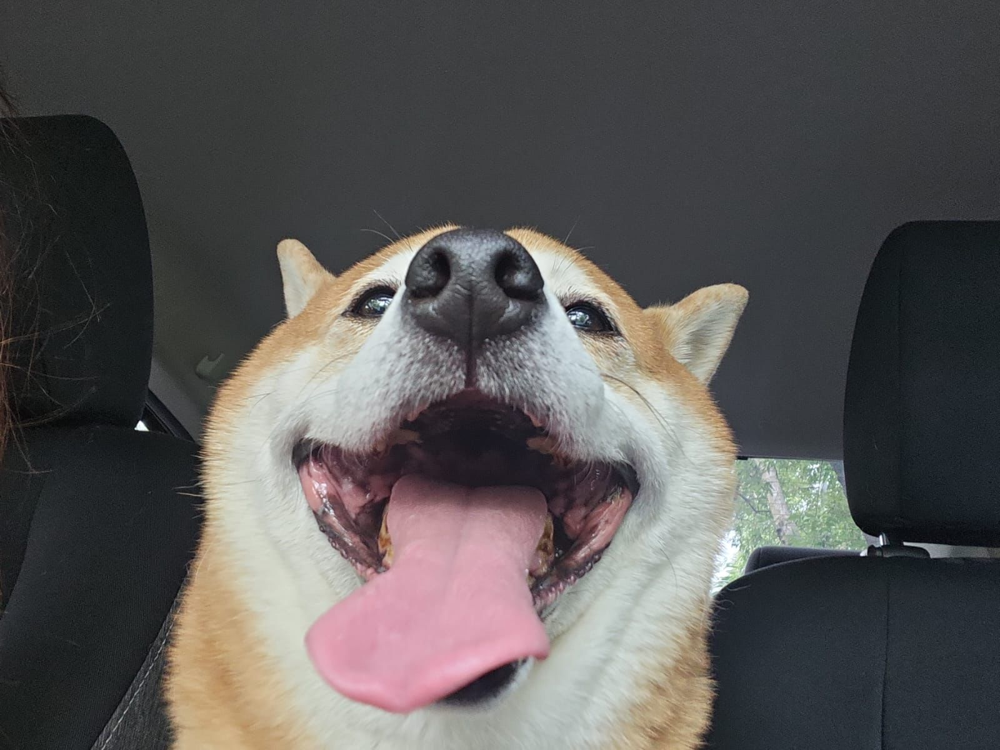
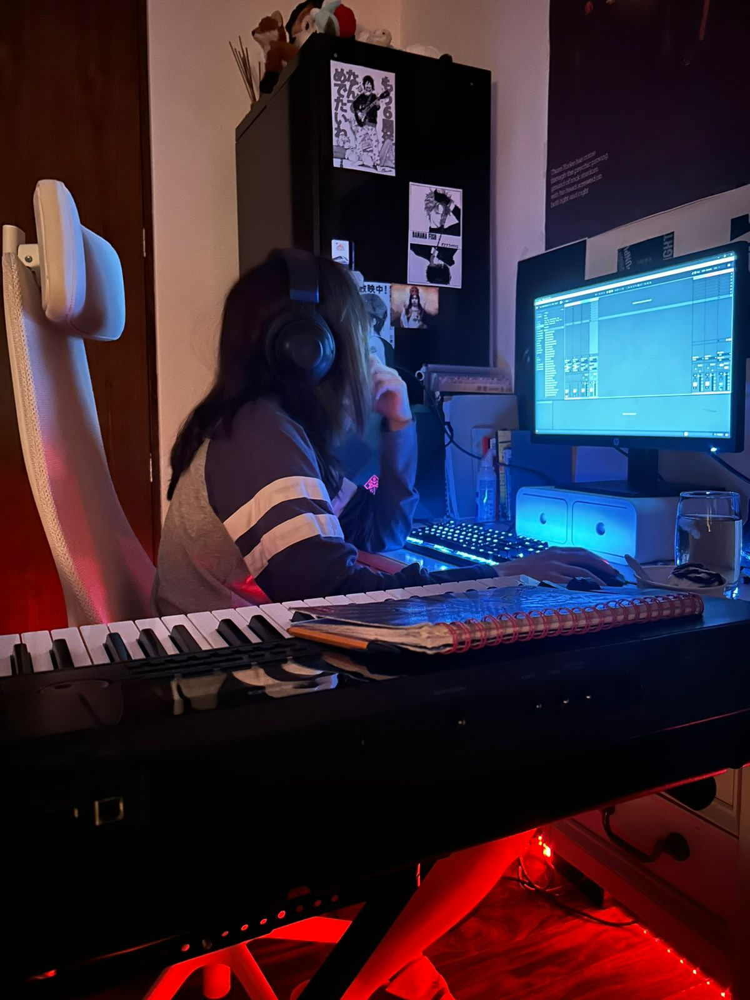
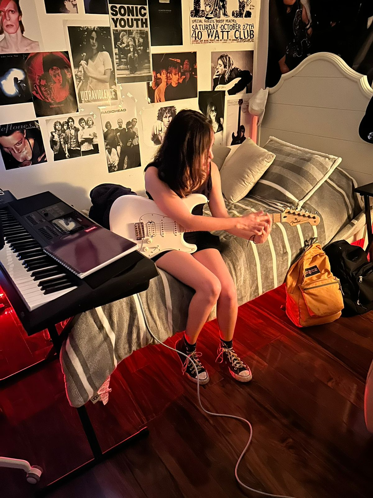

track 01 · demo
—:—
bass
Línea de bajo gruesa, grabada en una toma rápida.
// music · composition · production
Estudiante de música en la Anáhuac. Me gusta hacer sonidos raros y jugar con texturas sonoras, nunca digo que no a un buen café.
↳ guitarra · bajo · piano
↳ fan de los strokes
↳ inspirada por Jack, un shiba gordo 🐕
// 01 · about
y mucho ruido.
Soy Corey, llevo 4 años estudiando música con un poco de estrés al inicio pero siempre obsesionada. Compongo en la madrugada, canto en voz baja para no despertar a jack, y sigo creyendo que la leche de chocolate viene de las vacas cafés.
FORMACIÓN
Cursando la universidad
Licenciatura en Música contemporánea
INSTRUMENTOS
Guitarra · Bajo · Piano
y canto cuando nadie ve
GÉNEROS
Indie · Jazz · Shoegaze
(de todo un poco)
INFLUENCIAS
The Strokes · Mazzie Star · Sade
y BossaNova
07
demos vivas
02
proyectos
∞
tazas de café
// scrapbook
fotos sueltas del último semestre.







// 02 · listen
Bocetos, demos sin pulir y fragmentos que aún no tienen nombre. Apretá play — están vivos.
Línea de bajo gruesa, grabada en una toma rápida.
Idea nocturna a medio cocer, con texturas oscuras.
// 03 · watch
Sesiones improvisadas y snippets de ensayo. Cosas que pasan cuando la cámara está prendida sin querer.
Una toma de tarde con la guitarra eléctrica.
// 04 · upcoming
MAY · 2026
Cinco canciones grabadas entre el dormitorio y un estudio prestado. Mezcla final en proceso.
JUN · 2026
Programa con piezas propias y un par de covers. Auditorio de la universidad.
a wild small shiba appears
“quiero que mi música suene como la que
alguna vez me ayudó.”
— yo, divagando
// 05 · contact
Para colabos, sesiones, o cualquier cosa interesante.